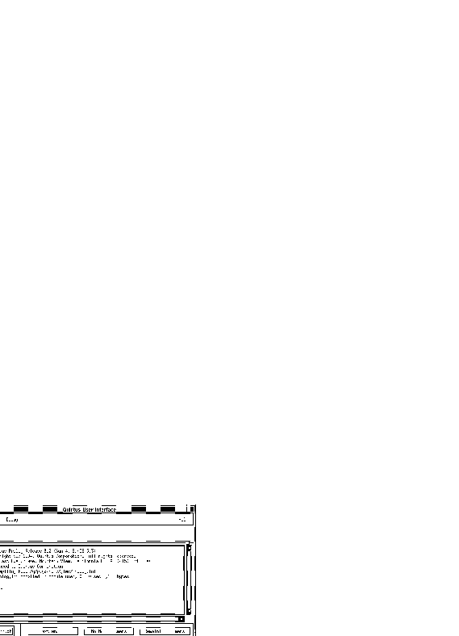

QUI Main Window
qui-mai-mai
: Main Window Menu Bar
qui-mai-his
: QUI Query History Menu
qui-mai-top
: QUI Query Interpreter Sub-Window
qui-mai-int
: QUI Interrupt Button
qui-mai-nxa
: QUI Next Answer Buttons
qui-mai-err
: QUI Error Dialogue Window

The QUI Main Window
User's Manual
Table of Contents
Next
Previous
Up
Node Menu